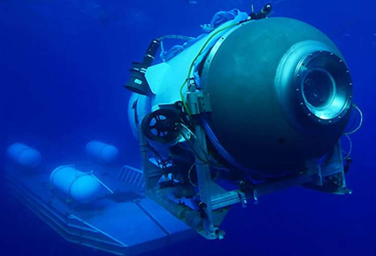

yandex el navegador que no todos conocen
ahmed kassem | 4 de mayo del 2023

Este navegador de origen ruso es poco conocido en el resto del mundo. Es un navegador confiable, seguro y rápido, con muchos servicios incluidos como correo electrónico, servicio de almacenamiento en la nube, entre otros.
petro revela algo que Duke no pudo hacer junto a Trump
ahmed kassem | 4 de mayo del 2023

Petro estuvo en España en una entrevista con el medio español El País y reveló que Duke estaba dispuesto a ayudar a Trump a intervenir en Venezuela. Menos mal que no lo hicieron, si se hubiera hecho estaríamos en graves problemas.
las protestas en maicao sigen

ahmed kassem | 24 de junio del 2023
sigen pidiendo la mejora de los servicios publicos mas especificamente
el agua y la electricidad desde hace dos semanas habian negociado pero no llegaron a un acuerdo que opinan ustedes
los ciudadanos de el municipio de maicao la guajira
Se acabó
ahmed kassem | 4 de mayo del 2023

La Organización Mundial de la Salud (OMS) hace dos días anunció que el COVID-19 ya no es una emergencia sanitaria. Tiempo después, los gringos van a retirar todas las medidas de emergencia el 10 de mayo. ¿Ustedes qué opinan?
La coronación de Carlos III
ahmed kassem | 6 de mayo del 2023

El rey Carlos III fue coronado el pasado 6 de mayo en una ceremonia llena de pompa y circunstancia. Esta coronación marca el inicio de una nueva era para el Reino Unido, tras el fallecimiento de su antecesora, la reina Isabel II. Hoy en día, muchos británicos, especialmente los más jóvenes, anhelan el fin de la monarquía británica para convertirse en una república. ¿Ustedes qué opinan?
el estado de la flota de aviones de combate de la FAC
ahmed kassem | 21 de junio del 2023

la FAC o fuerza aérea colombiana necesita lo antes posible un reemplazo para los aviones de combate actuales por unos más nuevos para poder garantizar la protección del territorio nacional. Mantener los aviones actuales se hará cada vez más costoso. ¿Qué opinan ustedes?
la reforma laboral se undió
ahmed kassem | 21 de junio del 2023

El Congreso de la República tumbó la reforma laboral desgraciadamente por los derechos laborales. Se necesitan mejores condiciones laborales en todo el país se habia anuciado que volverian a radicar la reforma. ¿Ustedes qué opinan sobre esto?
casi un golpe de estado en Rusia
ahmed kassem | 25 de junio del 2023
en la federacion rusa el grupo Wagner insta sus hombres a marchar hacia moscu para intentar expulsar a la cupula militar luego de que el grupo denunciara que las fuerzas
armadas rusas bombardearan una de sus bases el grupo tomo una ciudad cercana de moscu tiempo despues al borde de la gerra cibil llegaron a un acuerdo con mediacon de el precidente de bielo rusia y se retira a sus bases y todo bolvio a como estaba antes
que opinan ustedes que ubiera pasado si no hubiesen llegado a un acuerdo
¡fueron declarados muertos!
ahmed kassem | 23 de junio del 2023

el sumergible con millonarios abordo ha sido declarado destruido por implocion extrema cerca del titanic
segun los guarda costas de los gringos esta operacion de rescate tubo apoyo internacional ahora solo se busca a los cadaveres
y al submarino.
petro estubo en la guajira
ahmed kassem | 6 de julio del 2023
el preci estubo de temporalmente con sus ministros en la region para ver cuales serian las soliciones y propuestas para mejorar la calidad de vida en la region
hace dos o 3 dias regreso a la capital antes de eso anuncio que declara emergencia economica en la guajira que opinan ustedes
la piedra en el sapato de Twitter
ahmed kassem | 6 de julio del 2023
hoy don Mark Zuckerberg el dueño lanzo esta ap que copetira con twiter en mi opinion una copia descarada pero interesante
para los usuarios el dueño lo anuncio desde su cuenta de instagram pero cuidado cuando aceptan los permisos al instalarla que opinan ustedes